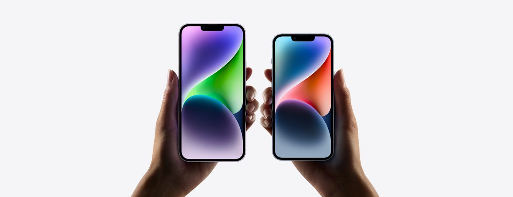

Okostelefonok
Az okostelefonok lehetővé teszik a felhasználók számára, hogy mindig és mindenhol kapcsolatban maradjanak másokkal, de ez gyakran vezet az állandó figyelemeltereléshez és a túlzott időráfordításhoz.
Példák: iPhone, Samsung Galaxy, Huawei, Xiaomi, OnePlus.
Az okostelefonok használata negatívan befolyásolhatja az alvást, a mentális egészséget és az emberi kapcsolatokat. Fontos, hogy a felhasználók tudatosan használják ezeket az eszközöket, és szükség esetén korlátozzák azok használatát.